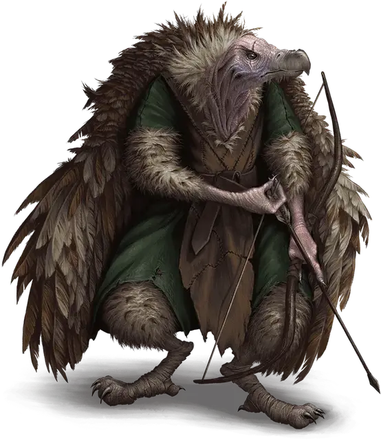

Верстервятник
Werevulture
Среднее Исчадие, хаотично-злое

Класс Доспеха 12
Хиты 75 (10к8 + 30)
Скорость 30 футов (в гуманоидном и гибридном обликах и 10 фт. в облике стервятника), летая 60 футов (в облике стервятника или гибридной форме)
| мод | спас | ||
|---|---|---|---|
| СИЛ | 16 | +3 | +3 |
| ЛОВ | 14 | +2 | +2 |
| ТЕЛ | 17 | +3 | +3 |
| мод | спас | ||
|---|---|---|---|
| ИНТ | 11 | +0 | +0 |
| МДР | 13 | +1 | +1 |
| ХАР | 8 | −1 | −1 |
Навыки Восприятие +5
Чувства пассивное Восприятие 15
Языки Общий (не может говорить в облике стервятника)
Опасность 4 (1100 опыта)
Бонус мастерства +2
Особенности
Регенерация. Верстервятник восстанавливает 10 хитов в начале своего хода. Если он получает урон излучением, эта особенность не действует в начале его следующего хода. Верстервятник умирает только если начинает свой ход с 0 хитов и не может регенерировать.
Действия
Мультиатака. Верстервятник совершает две атаки Когтями или совершает атаку Клювом и Когтями.
Клюв (только в облике стервятника или гибрида). Рукопашная атака оружием: +5 к попаданию, досягаемость 5 футов, одна цель. Попадание: 10 (2к6 + 3) колющего урона. Если цель — гуманоид, она должна преуспеть в спасброске Телосложения Сл 13, иначе станет проклятой до тех пор, пока на неё не наложат заклинание снятие проклятия [remove curse] или подобную магию. Если хиты проклятой цели опускаются до 0, она становится верстервятником под контролем Мастера и восстанавливает 10 хитов.
Когти. . Рукопашная атака оружием: +5 к попаданию, досягаемость 5 футов, одна цель. Попадание: 13 (4к4 + 3) рубящего урона.
Длинный лук (только в облике гуманоида или гибрида). Дальнобойная атака оружием: +5 к попаданию, дистанция 150/600 футов, одна цель. Попадание: 11 (2к8 + 2) колющего урона.
Бонусные действия
Смена формы. Верстервятник превращается в стервятника или гибрид стервятника и гуманоида или же принять свой истинный облик гуманоида. Вся его статистика, за исключением скорости, остаётся одинаковой во всех обликах. Всё несомое и носимое им снаряжение не превращается. Он принимает свой истинный облик, если умирает.
Описание
Ученые полагают, что проклятие верстервятника связано с вроками [vrock], похожими на стервятников демонами, известными своей алчностью и своенравной жестокостью. Согласно этим ученым, стая вроков спустилась на Материальный план через планарный разрыв, оставляя за собой болезни и другие несчастья. Многие из тех, кто был ранен демонами, выжили, и выжившие искренне поблагодарили своих богов за эту очевидную удачу. Но во время следующего полнолуния они превратились в первых верстервятников: отвратительных птицеподобных существ, которые жаждали плоти мертвых. С тех пор проклятие распространилось дальше и шире.
Верстервятники кажутся совершенно обычными, когда находятся в гуманоидной форме. Но при свете полной луны — или в другое время, когда они поддаются проклятию, — они меняются. Грязные крылья болезненно вырываются из их спин, а волосы опадают с их голов, оставляя их клювастые лица голыми и морщинистыми. Верстервятник питаются падалью, как это делают обычные стервятники, и у них алчная натура, как у вроков. Они следят за путешественниками с высоты птичьего полета, и когда им на глаза попадается красивая безделушка, они быстро спускаются, чтобы убить путешественников и забрать сокровища своих жертв.